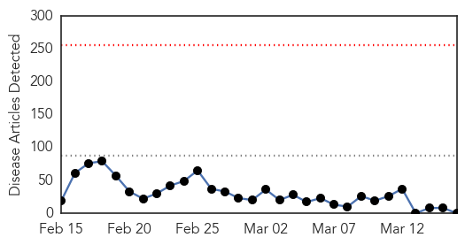
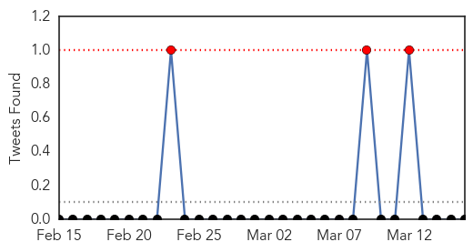

Measles
30-Day Web Trend
0 alerts, 0 warnings

30-Day Twitter Trend
3 alerts, 0 warnings

Article Locations

Article Confidences

Top Articles:
-
No articles found for Mar 16, 2015
Top Tweets:
-
No tweets found for Mar 16, 2015
Unknown
30-Day Web Trend
1 alerts, 0 warnings
30-Day Twitter Trend
0 alerts, 0 warnings

Article Locations

Article Confidences
Top Articles:
-
No articles found for Mar 16, 2015
Top Tweets:
- 0.621
- Enhanced flu protection: Adding a second strain of B flu lessens likelihood of mismatched vaccine http://t.co/K0eLJA5ovB via
- 0.567
- Flu activity remains elevated overall, however most of the country has returned to low or minimal levels of flu-like illness.
- 0.530
- RT: 13 confirmed human cases of MERS in Qatar (5 deaths). 7 out of 13 had contact with camels, (4 owners, 3 camel workers)
- 0.501
- RT: About 1000 MERS cases so far. Why important? "It's a virus ticking at the human-animal interface with severe fatality rate", s…